作成
をクリックして新しい記事を作成します。
タイトルが入力されていない場合は Untitled で保存されます。
| ショートカットキー |
| Windows (Chrome) |
Alt + Shift + C |
| Mac (Chrome) |
Control + Alt + C |
保存
をクリックして記事を保存します。
ローカルストレージの空き容量が足りなくなると保存できません。
| ショートカットキー |
| Windows (Chrome) |
Alt + Shift + S |
| Mac (Chrome) |
Control + Alt + S |
ファイルを添付
をクリックして画像や動画を添付できます。
1MB以下のファイルが使用できます。
| ショートカットキー |
| Windows (Chrome) |
Alt + Shift + O |
| Mac (Chrome) |
Control + Alt + O |
削除
をクリックして選択中の記事を削除します。
| ショートカットキー |
| Windows (Chrome) |
Alt + Shift + X |
| Mac (Chrome) |
Control + Alt + X |
検索
 をクリックして記事を検索します。
をクリックして記事を検索します。
一致した項目がリストに表示されます。
| ショートカットキー |
| Windows (Chrome) |
Alt + Shift + F |
| Mac (Chrome) |
Control + Alt + F |
検索結果を閉じる
をクリックしてリストの表示をリセットします。
| ショートカットキー |
| Windows (Chrome) |
Alt + Shift + W |
| Mac (Chrome) |
Control + Alt + W |
ヘルプ
をクリックしてこのダイアログを表示します。
| ショートカットキー |
| Windows (Chrome) |
Alt + Shift + ? |
| Mac (Chrome) |
Control + Alt + ? |